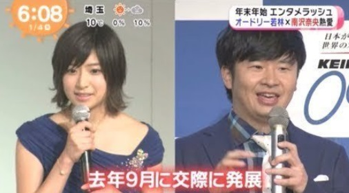
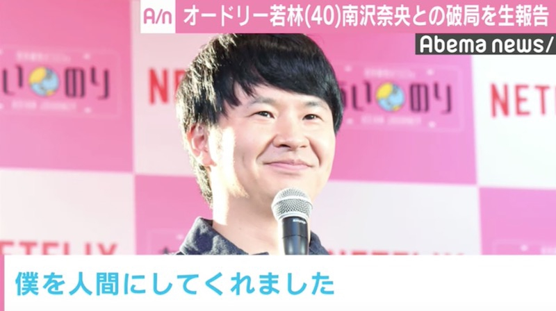
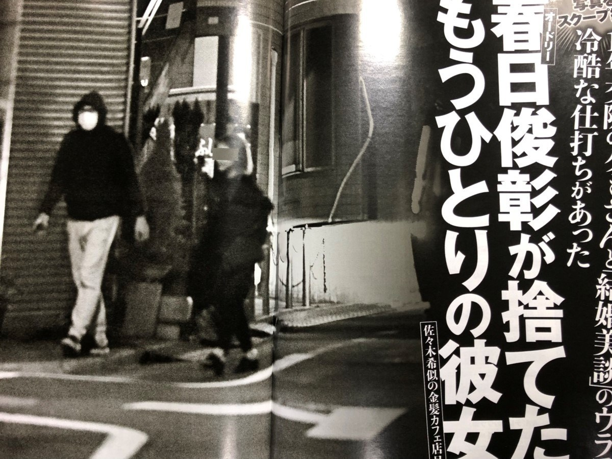

オードリーニュース
最新情報をまとめています。

2008/12/21 M1準優勝
敗者復活戦から挑んだ2008年のM1
お茶の間に鮮烈な印象を与え、一夜にして人生を変えた。
結果発表前に春日がMCの今田耕司に言い放った
「(自信が)なきゃここに立ってないですよ」はM1史に残る名言。

2016/2/24 ヒルナンデス椅子破壊事件
ヒルナンデスの生放送中にIKEAの「絶対に壊れない」椅子を
ぶっ壊すという近年稀に見る見事な放送事故。
SNSやYoutubeでかなり拡散された。本人たちは勿論大反省
ただ、後に春日はこの動画に助けられることになる。

2018/1/1 若林熱愛報道
人見知り芸人で名高い若林
女優南沢奈央との熱愛報道が発覚。
双方の事務所公認の「真剣交際」とのこと。
ガールズバー通いの成果がみられた。結婚秒読みか⁉

2018/4/9 ひらがな推しMC就任
けやき坂46の初冠番組「ひらがな推し」放送開始
女子高生に大人気のオードリーであるはずが、
けやき坂メンバーの「MCになってほしい芸人ランキング」では
見事に圏外。果たしてこれから人気番組に押し上げられるのか⁉

2018/9 若林破局
「いい恋させてもらったね」by若林正恭

2019/３/19 武道館ライブ
オードリーのオールナイトニッポン10周年記念で開催した
日本武道館ライブ。ライブビューイング含め2.2万人を動員した。
オードリーの芸人自生にとっての間違いなく大きな1ページとなった。

2019/4/18 春日モニタリングプロポーズ
ずっと待たせてきた「狙女」クミさんに満を持してプロポーズ。
ピアノを猛練習し、ゆず本人と「栄光の架橋」をコラボ演奏。
手紙で想いを伝える場面、若林の号泣姿は、リトルトゥースに
限らず、広くお茶の間の涙を誘った

2019/4/26 春日FRIDAY
モニタリングのプロポーズの感動が冷めやらぬ中、
なんとプロポーズの10日前の浮気をしていたことが発覚。
所属事務所は「とんだ大馬鹿変態野郎」とコメント。
春日はスーツに100万の札束を持参し、クミさんに謝罪しに行く。
クミさん曰く、「諸悪の根源は(中川)パラダイス」。

2019/11/22 若林結婚
26歳看護師の一般人と結婚。交際3ヶ月の電撃婚を果たす。
ANN内で春日にドッキリ報告をし、トークの伏線を回収した。
ちなみに、ニョボ林は「日向坂で会いましょう」での、
「贔屓」のやり取りには苦言を呈している。